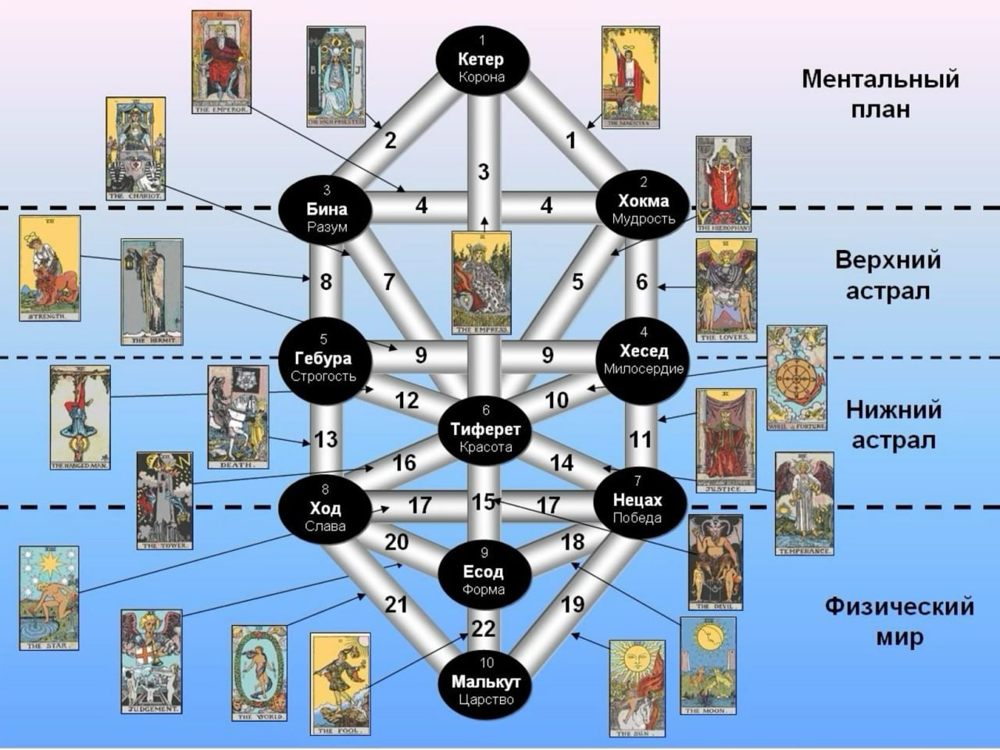
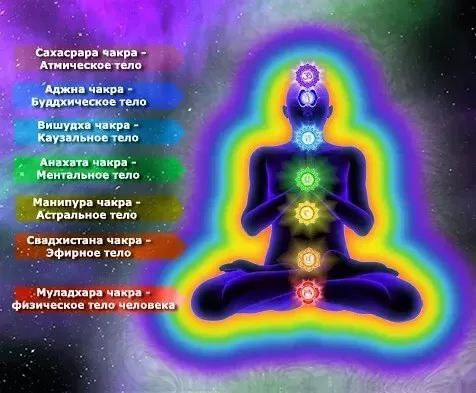
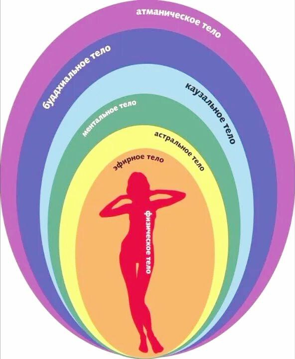
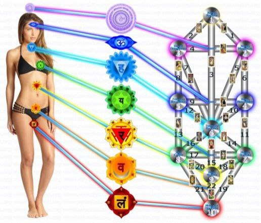
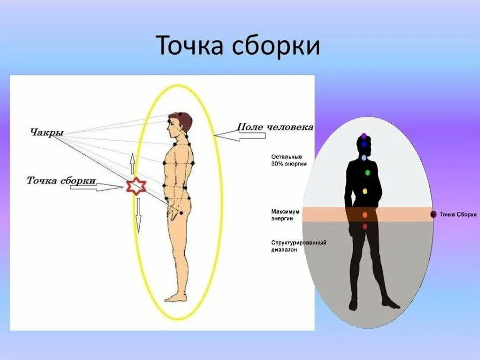
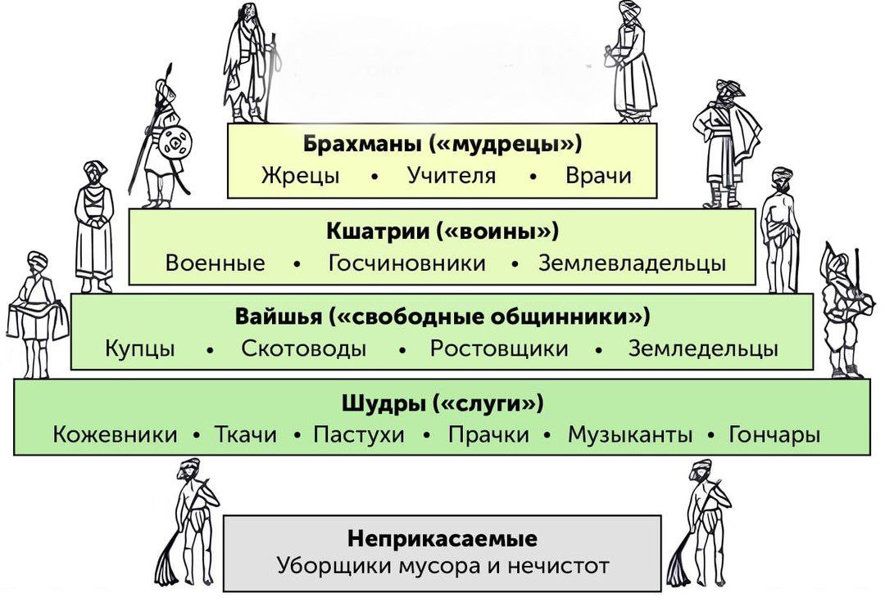

✨
Символический язык
Каждая карта — это ключ к пониманию глубинных процессов души и закономерностей вселенной.
Погрузитесь в мистический мир карт Таро и раскройте свою интуицию. Обучение старшим и младшим арканам — это путь к глубокому самопознанию и духовному росту.
Карты Таро — это не просто предсказание, а мощный инструмент для самопознания и духовного развития
Каждая карта — это ключ к пониманию глубинных процессов души и закономерностей вселенной.
Научитесь чувствовать вибрации карт и устанавливать глубокую связь с колодой.
Развивайте внутреннее зрение и способность видеть скрытые связи между событиями.
Комплексное обучение от основ до мастерского владения картами
Погружение в мир великих архетипов. 22 карты Старших арканов — это карта вашей души, отражающая духовные уроки и этапы эволюции.
56 карт Младших арканов отражают повседневные ситуации и эмоциональные состояния. Научитесь читать язык стихий и мастей.
Развитие внутреннего зрения и способности чувствовать энергию карт. Переход от механического запоминания к истинному пониманию.
Старшие арканы • Фундаментальный уровень
Фундаментальные основы Таро
История, «Дерево сефирот», арканы, сефиры.
Ментальный и астральный миры. Касты, точка сборки, карма.
Переход на новый уровень развития
Практика выхода к местам силы аркана. Заклинания 22 аркана.
Успех, мир, вселенная.
Астральные полеты. Использование внешних мест силы.
Обновление, пробуждение, трансформация.
Слово, солнце, радость, успех.
Развитие, луна, интуиция.
Круговорот, звезда, матрица судьбы.
Продвинутые практики и магия арканов
Отдача. Практики наработки видения на уровне мыслеформ.
Теория и практика 16 аркана, кармическое целительство.
Зависимость. Теория и практика укрепления серебряной нити.
Управление связями.
Теория и практики магии Воздуха. Трансформация.
Теория Некромантии. Остановка процессов.
Объект. Помощь высших сил.
Закон. Справедливость, способность управления силами Хаоса и Порядка.
Судьба. Колесо Фортуны, способность изменять реальность.
Духовность. Самодостаточность, власть над миром.
Мастерское владение Таро
Третья ступень находится в разработке. Следите за обновлениями!
Глубокая работа с энергетическими блоками и расширением сознания
Работа с подсознательными установками, блокирующими денежный поток. Активация энергии процветания через символы Таро.
Практики для расширения сознания и подключения к высшему "Я". Медитации с картами для глубокого внутреннего познания.
Работа с психологическими травмами и ограничивающими убеждениями через архетипическую мудрость Таро.
Понятия и термины из мира Таро и эзотерики
Наш глосарий поможет вам понять ключевые понятия Таро, эзотерические термины и метафические концепции, необходимые для глубокого изучения древней мудрости.

Вселенная: Вселенная представляет собой единое целое, функционирующее благодаря балансу противоположных начал. Древо Сефирот описывает структуру мира, сознание Земли и человеческий разум.
Структура: состоит из десяти сефир, расположенных ярусами и связанных между собой каналами.
Кетер: оформленный первородный божественный свет.
Хокма: пространство глобального будущего для планеты: вероятного и невероятного.
Бина: глобальный архив Мироздания, «хроники Акаши».
Хезед: будущее, которое прошло отсев на соответствие приемлемой для нашей реальности Инь-Ян-парадигме.
Гебура: библиотека, духовный архив информации о нашей реальности, обитель развитых сознаний уровня ангелов, святых и божеств пантеонов.
Тиферет: пространство красоты, гармонии. Здесь находятся мыслеформы нашей реальности, которые уже прошли отсев на более высокочастотных уровнях божественных замыслов и идей.
Нецах: пространство допустимого будущего для планеты, мир сновидений.
Ход: библиотека памяти обо всём, что когда-то жило. Мир мёртвых, пространство между жизнями.
Есод: законы человеческого социума. Формирует то, что отличает людей от животных.
Малькут: проявленный, материальный мир.

Чакра (санскр. «Колесо») – энергетический центр на коконе человека. Чакры существуют в определенном частотном диапазоне и представляют определенный слой реальности.

Энергетический кокон — разноцветная оболочка, которая обволакивает физическое тело и отделяет его от окружающего мира.

Если сопоставить человека схеме Древа сефирот, то его тело будет соответствовать миру Малькут. При этом он пронзает разные пространства, и всё есть человек.

Точка сборки – термин из книг Карлоса Кастанеда. Главным образом, он обозначает режим восприятия окружающего мира. Для большинства людей точка сборки находится в фиксированном положении, что обеспечивает формирование в сознании человека статичной картины мира. Такая обыденная картина мира позволяет жить и эффективно действовать на уровне материальной реальности. Однако духовные практики умеют смещать точку сборки, перемещая свое сознание и в другие сферы бытия. Точка сборки определяет уровень реальности, который доступен для сознания.

Маги различают 4 касты людей, представляющие собой ступени в индивидуальной эволюции человека (наподобие школьных классов). Нарабатывая в каждой жизни необходимые признаки человек, переходит из касты, в касту затрачивая на переход разное количество времени в зависимости от целей которые он в этой жизни реализует (способствуют ли они наработке качества данной касты). Каждая каста имеет свои признаки, которые можно разделить на поведенческие и энергетические.
Простые шаги к глубокому познанию древней мудрости
Напишите администратору в Telegram и получите подробную информацию о программах обучения и доступных форматах.
Написать в TelegramОпределите уровень подготовки и выберите подходящую программу. Мы поможем найти идеальный формат для ваших целей.
Начните изучение арканов, практикуйтесь с картами и развивайте интуицию под руководством опытного наставника.
Станьте уверенным таро-практиком, способным глубоко читать карты и помогать другим на их духовном пути.
Каждый день откладывания — это упущенная возможность познать себя глубже. Сделайте первый шаг к мудрости Таро прямо сейчас.